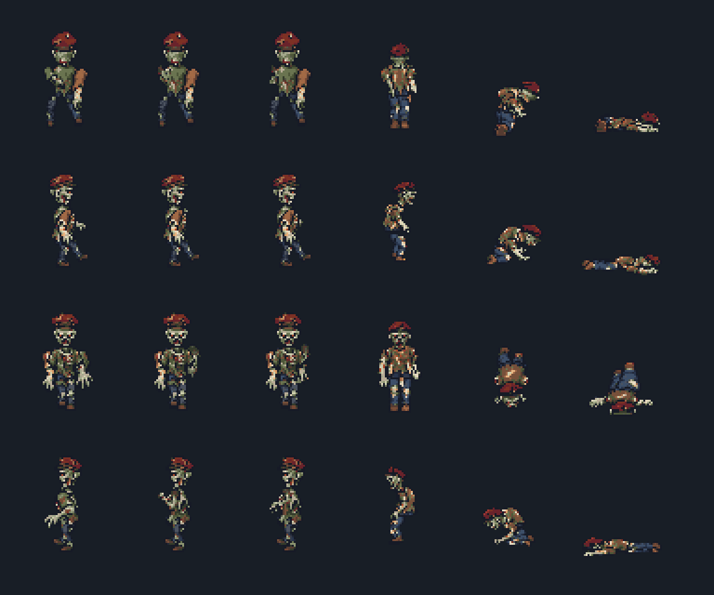
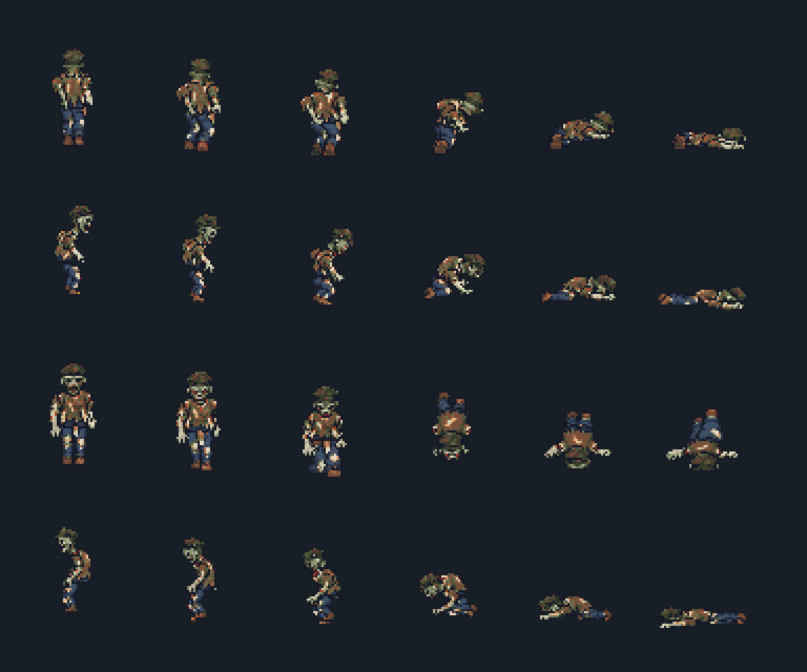
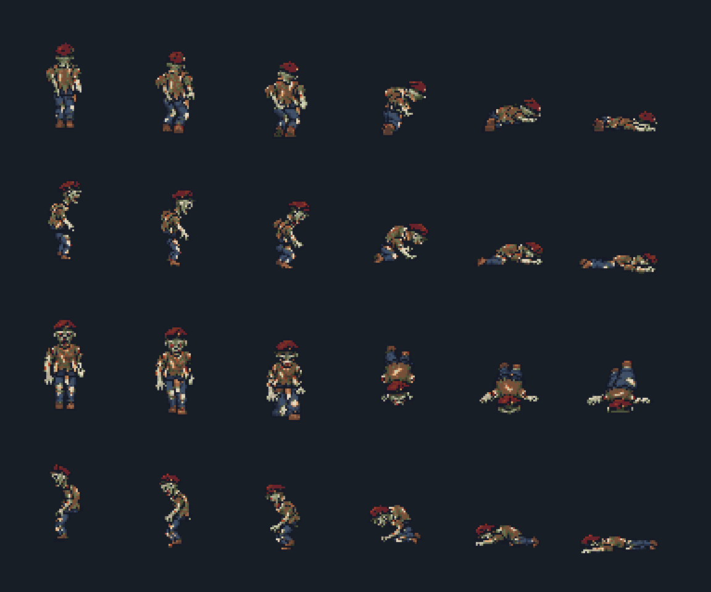

Same cap_bandaged variant, authored head replacement, existing rig/resource/renderer. Motion quality is still under review.

Recorded world ticks at 60 Hz. One nonlethal shot, contact windup, then lethal shot; owned corpse retains variant 0. Playback follows the recorded timestamps.


Stable technical report · Cross-action CSV · GPU log · Exact edit prompt